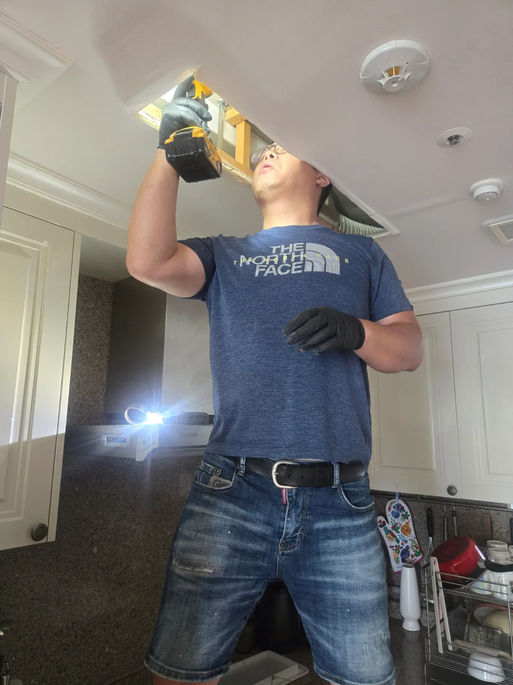

강남구 대치동 하수구막힘, 현장 도착 후 진단
강남구 대치동 천장형 에어컨의 드레인관막힘 요청을 접수한 신라건축설비는 천장 내부 배관 작업에 필요한 장비와 보양 자재를 준비해 신속하게 현장으로 출동했습니다. 숙련된 배관 기술자가 에어컨 본체 주변과 응축수 배출 상태를 점검한 결과, 겉으로 드러난 부분만 처리해서는 정확한 원인을 확인하기 어려웠습니다. 에어컨 드레인관은 천장 안쪽으로 연결되기 때문에 막힘 위치를 잘못 판단하면 불필요한 천장 손상이 발생할 수 있습니다. 이에 배관의 진행 방향과 점검이 필요한 위치를 확인한 뒤 최소 범위로 천장을 개방하기로 했습니다.
1단계: 증상 확인과 필요한 장비 작업
천장 작업 중 발생할 수 있는 분진과 오염으로부터 실내 가구와 바닥을 보호하기 위해 작업 구간 전체에 비닐 보양을 실시했습니다. 작업자가 안전하게 접근할 수 있도록 사다리와 장비를 배치한 뒤, 드레인관 점검에 필요한 천장 구간을 부분적으로 개방했습니다. 무작정 넓게 철거하지 않고 배관 위치를 고려해 점검구 형태로 작업 범위를 설정함으로써 실내 마감재의 손상을 줄였습니다.

2단계: 원인 구간 처리와 정상 작동 확인
개방된 천장 내부에서 에어컨 응축수 드레인관의 연결 상태와 배관 진행 방향을 확인했습니다. 이후 배수가 원활하지 않은 구간을 중심으로 내부 막힘을 제거하고 드레인관의 물길을 확보했습니다. 단순히 에어컨 주변의 고인 물만 처리하는 데 그치지 않고, 실제로 응축수가 빠져나가는 배수 경로를 따라 점검했습니다. 작업 후 물을 흘려보내 드레인관 내부의 배수 속도와 정체 여부를 확인하고 추가 누수 가능성이 없는지 살폈습니다.

작업 결과와 재발 방지 안내
천장 내부 드레인관의 막힘 구간을 정리한 뒤 에어컨 응축수가 배관을 따라 정상적으로 배출되는 것을 확인했습니다. 에어컨 드레인관에는 먼지와 점액성 오염물이 축적되면서 물길이 좁아질 수 있으며, 장기간 방치하면 천장 누수와 마감재 손상으로 이어질 수 있습니다. 에어컨 가동 중 물 떨어지는 소리, 천장 얼룩, 에어컨 주변의 물고임이 발견된다면 사용을 계속하기보다 드레인관과 천장 내부 배관을 함께 점검하는 것이 좋습니다.
신라건축설비는 강남구 대치동을 비롯한 서울 전 지역과 경기권에 신속하게 출동하여 에어컨 드레인관막힘과 각종 배관막힘을 전문적으로 해결합니다. 단순히 막힌 물길만 임시로 확보하지 않고 천장 내부 배관의 위치와 구조를 확인해 필요한 구간만 안전하게 개방합니다. 변기막힘·싱크대막힘·하수구막힘뿐 아니라 천장 내부 배관 점검, 배관 보수·교체 및 고난도 배관공사까지 자체적으로 대응할 수 있습니다.
최종 조치: 가구와 바닥을 비닐로 충분히 보양한 후 작업에 필요한 천장 구간을 부분적으로 개방했습니다. 천장 내부의 에어컨 드레인관과 연결 상태를 점검하고 막힌 배수 구간을 정리한 뒤, 물을 이용한 통수검사로 응축수 배출 상태를 확인했습니다.
현장 방문 전 확인하는 비용과 작업 범위
신라건축설비는 현장 증상과 배관 구조를 확인한 뒤 필요한 작업과 예상 비용을 안내합니다. 단순 관통으로 해결되는지, 배관내시경·석션·고압세척 또는 추가 장비가 필요한지는 현장 상태에 따라 달라집니다. 출장비와 야간 작업비, 추가 장비 비용이 발생할 수 있는 경우 작업 전에 먼저 설명하고 동의를 받은 범위에서 진행합니다.
업체를 선택할 때 확인할 사항
무조건적인 ‘0원’ 표현보다 실제 작업 범위, 추가 비용 조건, 사용 장비와 사후 대응 기준을 확인하는 것이 중요합니다. 해결되지 않았을 때의 비용 기준과 작업 후 동일 증상 발생 시 점검 범위를 사전에 문의해두면 불필요한 분쟁을 줄일 수 있습니다.
강남구 하수구막힘 자주 묻는 질문
여러 배수구가 동시에 역류하면 공용배관 문제인가요?
천장형 에어컨에서 발생한 응축수가 드레인관을 따라 원활하게 배출되지 않아 천장 내부에 물이 고이거나 누수로 이어질 수 있는 상태였습니다. 에어컨 주변만 살펴봐서는 정확한 배수 불량 위치와 천장 내부 배관 상태를 확인하기 어려웠습니다.처럼 증상이 나타나더라도 원인은 현장마다 다를 수 있습니다. 장비와 배관 구조를 확인한 뒤 필요한 작업 범위를 안내합니다.
고압세척이 항상 필요한가요?
작업 전 증상과 현장 여건을 확인해 예상 범위와 비용을 먼저 안내합니다. 변기 탈거, 장비 추가 투입 또는 공용배관 작업이 필요한 경우 고객 동의 없이 임의로 진행하지 않습니다.
작업 전 추가 비용을 확인할 수 있나요?
완료 후 정상 작동을 함께 확인하고 작업 범위에 따른 사후 안내를 드립니다. 동일 증상이 반복되면 현장 기록을 기준으로 원인을 다시 점검합니다.
하수구막힘 서울·경기 출동지역
신라건축설비는 강남구 대치동 현장을 포함해 서울 25개 구와 경기도 31개 시·군의 배관 문제를 상담합니다. 현장 거리와 기사 배정 상황에 따라 출동 가능 여부를 먼저 안내드립니다.
서울 전 지역
강남구 · 강동구 · 강북구 · 강서구 · 관악구 · 광진구 · 구로구 · 금천구 · 노원구 · 도봉구 · 동대문구 · 동작구 · 마포구 · 서대문구 · 서초구 · 성동구 · 성북구 · 송파구 · 양천구 · 영등포구 · 용산구 · 은평구 · 종로구 · 중구 · 중랑구
경기도 주요 출동지역
수원시 · 용인시 · 고양시 · 화성시 · 성남시 · 부천시 · 남양주시 · 안산시 · 평택시 · 안양시 · 시흥시 · 파주시 · 김포시 · 의정부시 · 광주시 · 하남시 · 광명시 · 군포시 · 양주시 · 오산시 · 이천시 · 안성시 · 구리시 · 의왕시 · 포천시 · 양평군 · 여주시 · 동두천시 · 과천시 · 가평군 · 연천군